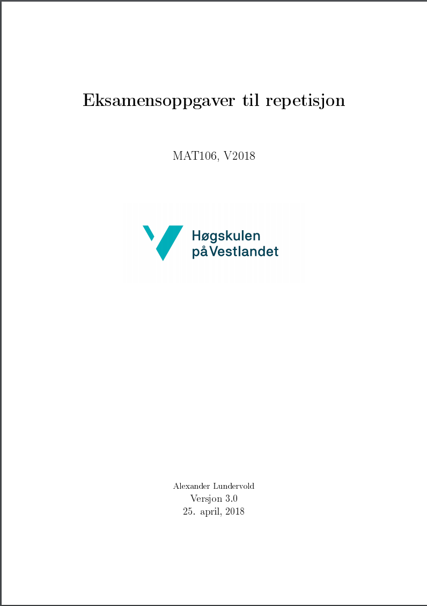
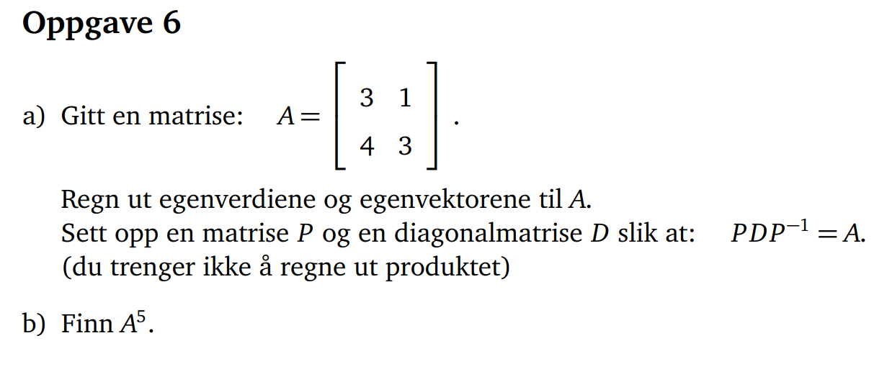
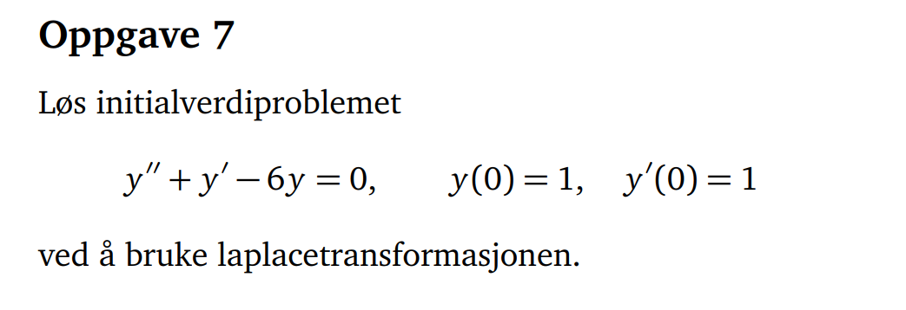
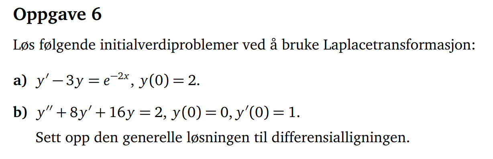
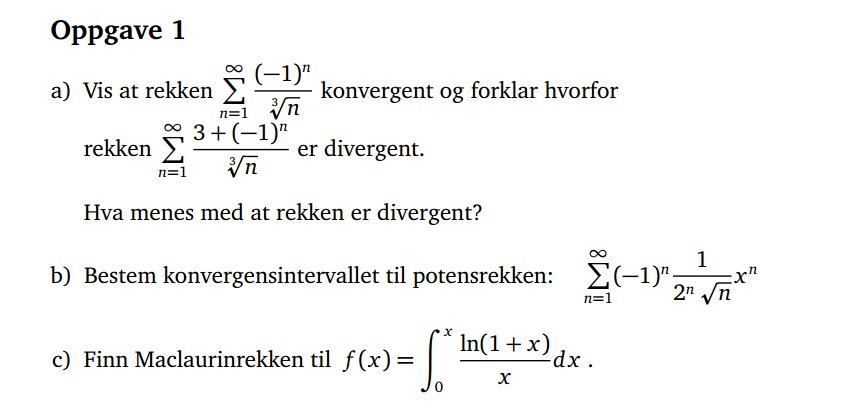
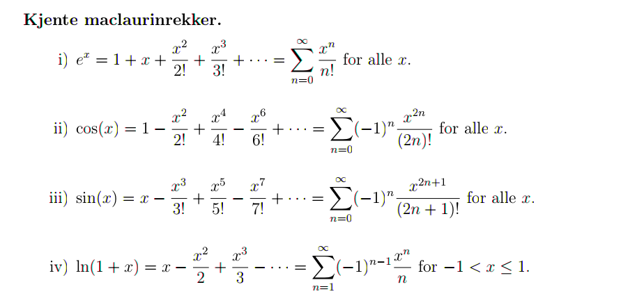
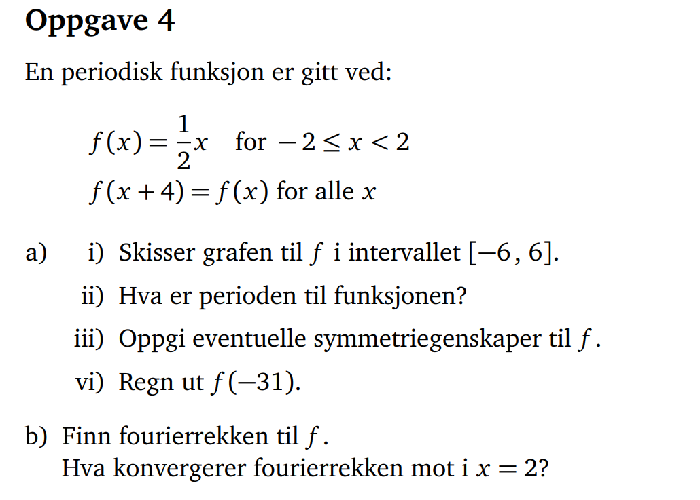
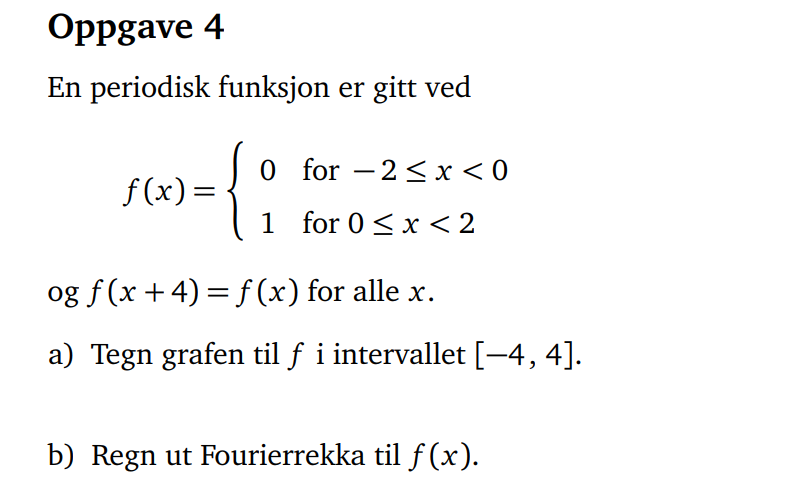

MAT106
Uke 18 og 19
30.04.2018
Alexander Lundervold
institutt for data- og realfag
På mobil? Swipe
Noen tips frem mot eksamen
- Løs oppgaver! Eksamensoppgaver, innleveringsoppgaver, ukeoppgaver, eksamensrepetisjonshefte
- Skaff deg en oversikt over pensum.
Tips: lag stikkordliste - Jobb gjennom tidligere eksamenssett. 4 timer, kun kalkulator og formelark
- Dann kollokviegrupper. Diskuter pensum og oppgaver.
- Spør om hjelp
- Sjekk alternative kilder. Se forelesningsloggen på itsLearning. MAT106x.
Eksamensrepetisjonshefte
Repetisjon
Diagnonalisering og matrisepotenser
Se også MAT106x på AkademiX
H2015, oppgave 6
{kind=link}
Laplacetransformasjonen
Se også MAT106x på AkademiX
Januar 2017, oppgave 7
{kind=link}
Januar 2017, oppgave 7
{kind=link}
Rekker og potensrekker
Se også MAT106x på AkademiX
MAT106, våren 2014. Oppgave 1

MAT107, høsten 2014. Oppgave 1
{kind=link}
Rekker — en oppsummering
$\sum_{n=1}^{\infty} a_n $
$\color{blue}{\sum_{n=1}^N a_n}$ kalles delsummer
Konvergens
Rekken $\sum a_n$ konvergerer dersom grensen $$\lim_{N\rightarrow \infty}\sum_{n=1}^N a_n$$ eksisterer.
Dersom $\lim_{N\rightarrow \infty}\sum_{n=1}^N a_n = S$ kaller vi $S$ summen av rekken:
$$\sum_{n=1}^{\infty} a_n = S$$Eksempler
- Geometriske rekker:
$$\sum_{n=0}^{\infty} a r^n = \frac{a}{1-r}, \quad \mbox{dersom } |r| < 1.$$
Divergerer dersom $|r|\geq 1$. - p-rekker: $$\sum_{n=1}^{\infty}\frac{1}{n^p}$$ konvergerer dersom $|p|>1$, divergerer dersom $p \leq 1$.
Konvergenstester
Kan teste hvorvidt en rekke konvergerer (uten å finne summen)
Divergens-testen: Rekken $\sum a_n$ divergerer dersom $\lim_{n\rightarrow \infty} a_n \neq 0$.
OBS: Pass på retningen på implikasjonen!
Rekken $\sum 1/n$ divergerer selv om $\lim_{n\rightarrow \infty} 1/n = 0$.
Integraltesten
Dersom $f$ er kontinuerlig, avtagende og positiv, så vil
$$\sum_{n=0}^{\infty} f(n) \quad \mbox{konvergere}$$hvis og bare hvis
$$\int_{0}^{\infty} f(x) dx \quad \mbox{konvergerer}.$$Oppgave: Konvergerer $\sum_{n=1}^{\infty} 1/n$? Hva med $\sum_{n=1}^{\infty} 1/n^p$ når $p>1$?
Sammenligningstesten
Dersom $a_n \leq b_n$, der leddene $a_n$ og $b_n$ er positive, og $\sum b_n$ konvergerer, så vil $\sum a_n$ konvergere.
Dersom $a_n \geq c_n$ og $\sum c_n$ divergerer så vil $\sum a_n$ divergere.

Grensesammenligningstesten
Dersom
$$\lim_{n\rightarrow \infty} \left|\frac{a_n}{b_n}\right| = L, \quad \mbox{der } 0 < L < \infty$$så vil $\sum a_n$ og $\sum b_n$ enten begge konvergere eller begge divergere
- Sammenligningstestene trenger noe å sammenligne med. F.eks. p-rekker eller geometriske rekker
- Rekken $\sum_{n=0}^{\infty} a_n$ konvergerer/divergerer hvis og bare hvis $\sum_{\color{blue}{n=N}}^{\infty} a_n$ konvergerer/divergerer
"Bryr seg ikke om hva som skjer i starten av rekken"
Forholdstesten
Anta
$$ \lim_{n\rightarrow \infty} \left|\frac{a_{n+1}}{a_n}\right| = L.$$Dersom
$$\begin{align} L < 1 &\quad \mbox{vil } \sum a_n \mbox{ konvergere}\\ L > 1 &\quad \mbox{vil } \sum a_n \mbox{ divergere}\\ L = 1 &\quad \mbox{vil vi ikke få noen informasjon (bruk en annen test)} \end{align}$$Leibniz-testen
For alternerende rekker $\sum (-1)^n a_n$.
Dersom
$$\begin{eqnarray} &\mbox{(i) } & a_n \geq 0 \quad &\mbox{(positiv)}\\ &\mbox{(ii) } & a_{n+1} < a_n \quad &\mbox{(avtagende)}\\ &\mbox{(iii) } &\lim_{n\rightarrow \infty} a_n = 0 \end{eqnarray}$$så vil
$$\sum (-1)^n a_n$$konvergere.
Konvergenstester
Hva med rekker som ikke bare har positive ledd, men ikke alternerer?Dersom $\sum |a_n|$ konvergerer vil også $\sum a_n$ konvergere
Hvorfor?
MAT106, våren 2014. Oppgave 1
MAT107, høsten 2014. Oppgave 1
Potensrekker og Taylorrekker
En viktig type rekker:
Potensrekker:
\[ \sum_{n=0}^{\infty} a_n x^n = a_0+ a_1 x + a_2 x^2 + \cdots.\]Sjekker konvergens av potensrekker ved hjelp av forholdstesten.
En viktig type potensrekker:
TaylorrekkerTaylorrekker
Taylorrekken rundt $x=a$ til en funksjon $f$ er
$$ \begin{align} &\sum_{n=0}^{\infty} \frac{f^{(n)}(a)}{n!} (x-a)^n\\ &\quad = f(a) + f'(a)(x-a) + \frac{f''(a)}{2!} (x-a)^2 + \cdots.\end{align}$$Taylorpolynom
Delsummene til Taylorrekker brukes til å tilnærme funksjoner. Delsummene kalles Taylorpolynom.
Kjente taylorrekker
{kind=link}
Manipulasjon
Kan manipulere potensrekker. For eksempel:
- Legge sammen potensrekker
- Substitusjon: bytte ut $x$ med noe annet:
Har \[e^x = \sum_{n=0}^{\infty} \frac{x^n}{n!} \] så \[e^{3x} = \sum_{n=0}^{\infty} \frac{(3x)^n}{n!} = \sum_{n=0}^{\infty} \frac{3^n x^n}{n!} \] - Integrasjon og derivasjon ledd-for-ledd
MAT106, våren 2014. Oppgave 1
MAT107, høsten 2014. Oppgave 1
Fourierrekker
Se også MAT106x på AkademiXDersom $f$ er en $2L$-periodisk funksjon er fourierrekken til $f$
$$a_0 + \sum_{n=1}^{\infty} \left(a_n \cos\left(\frac{n\pi x}{L}\right) + b_n \sin\left(\frac{n\pi x}{L}\right)\right),$$der koeffisientene $a_0, a_1, a_2, \dots$ og $b_1, b_2, b_3, \dots$ er gitt ved følgende integraler
Fourierrekker
\begin{align*} a_0 &= \frac{1}{2L} \int_{-L}^L f(x) \mbox{d}x \\\\ a_n &= \frac1L \int_{-L}^L f(x)\cos\left(\frac{n\pi x}{L}\right) \mbox{d}x \\ \\ b_n &= \frac1L \int_{-L}^L f(x)\sin\left(\frac{n\pi x}{L}\right) \mbox{d}x \end{align*}
Fourierrekker
Husk: Dersom $f$ er jamn eller odde kan vi spare litt tid når vi løser integralene.

NB: Ikke alle funksjoner er odde eller jamne; de fleste er hverken-eller.
V2014, oppgave 4 
{kind=link}
MAT107 H2014, oppgave 4 
{kind=link}
Plot av første par ledd i fourierrekken:
plot , x=-2..2Bølger og frekvenser